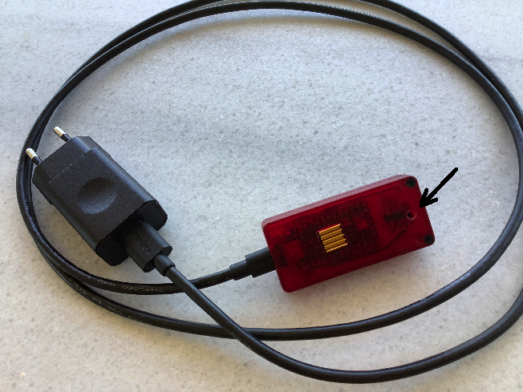
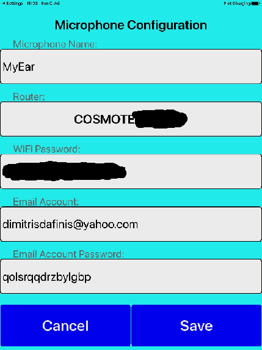

Βήμα 1: Βάζουμε το πλαστικό καρφάκι στην οπή στο πίσω μέρος του μικροφώνου και πατάμε προσεκτικά μέχρι να καταλάβουμε ότι πατήθηκε το εσωτερικό μπουτόν. Με πατημένο το μπουτόν, βάζουμε το μικρόφωνο στη πρίζα. Ενδέχεται να χρειαστεί ένα βοηθητικό πρόσωπο σε αυτό το βήμα. Παρατηρούμε ότι το LED αρχίζει να αναβοσβήνει «τρελά» (30 φορές στο δευτερόλεπτο).
Το μικρόφωνο βρίσκεται τώρα σε κατάσταση αρχικοποίησης και θα παραμείνει σε αυτή την κατάσταση μέχρι να αρχικοποιηθεί πλήρως, ακόμη και αν το βγάλουμε από τη πρίζα και το ξαναβάλουμε. Δεν θα χρειαστεί δηλαδή να επαναλάβουμε τη διαδικασία με το καρφάκι (ο βοηθός τώρα μπορεί να φύγει).
Βήμα 2: Πηγαίνουμε στις Ρυθμίσεις (Settings) του iPhone ή iPad, στην κατηγορία Wi-Fi. Πρέπει να εμφανιστεί το δίκτυο MyEar. Ενδέχεται να χρειαστεί να κλείσουμε και να ανοίξουμε ξανά τον διακόπτη Wi-Fi. Συνδεόμαστε με το δίκτυο MyEar, αγνοώντας τις ενδείξεις «Μη ασφαλές δίκτυο» και «Δεν υπάρχει σύνδεση στο Διαδίκτυο» (“No Internet Connection” & “Unsecured Network”).
Βήμα 3: Ξεκινούμε την εφαρμογή MyEar. Εμφανίζεται η εξής οθόνη:

Παρατηρούμε ότι η εφαρμογή έχει συμπληρώσει αυτόματα τα πεδία "Microphone Name", "Email Account" και "Email Account Password", σύμφωνα με αυτά που είχαμε βάλει προηγουμένως.
Βήμα 4: Πατώντας το κουμπί "Router" εμφανίζεται μία οθόνη που δείχνει τους routers που "πιάνει" το μικρόφωνο. Επιλέγουμε έναν από αυτούς και συμπληρώνουμε το WiFi Password του router που επιλέξαμε.
Βήμα 5: Τελειώνουμε την αρχικοποίηση του μικροφώνου πατώντας το “Save”. Βγάζουμε το μικρόφωνο από τη πρίζα και την επόμενη φορά που θα το βάλουμε ξανά, αυτό θα είναι σε κανονική κατάσταση λειτουργίας.